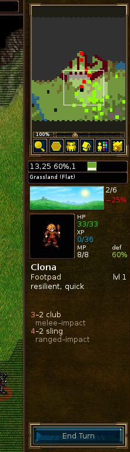

Садржај
Списак табела
„Бој за Веснот“ је стратешка игра на потезе у фантазијском миљеу.
Саставите врсну војску, постепено увежбавајући сирове регруте до прекаљених ветерана. У каснијим партијама, сазовите своје најжилавије ратнике и образујте навалу којој се нико не може супротставити! Бирајте јединице из великог скупа специјализованих, својеручно подижући силу која је способна за борбу по свакаквом терену и против разноликих противника.
Веснот нуди многе приче које чекају да буду одигране. Можете се борити против оркова, немртвих и разбојника по мочварама Веснотског краљевства; борити покрај змајева у сурим висовима, вилењака у зеленим гајевима Етенвуда, патуљака у великим дворанама Кналге, па чак и морејаца у Бисерном заливу. Можете кренути у поход да повратите престо Веснота, упрегнути своју страшну моћ над немртвима да овладате земљама смртника̂, или повести славно орковско племе у победу против људи што се усудише да окаљају ваше земље.
На располагању вам стоји преко две стотине типова јединица (пешадија, коњица, стрелци, магови колико за почетак) и борбена дејства од локалних заседа до судара непрегледних војски. Такође можете изазивати своје пријатеље — или незнанце — и учествовати у епским вишеиграчким фантазијским бојевима.
Бој за Веснот је софтвер отвореног кода, на чијем сталном побољшању ради живахна заједница волонтера. Можете стварати посебне јединице, писати сценарије, па чак и скриптовати свеобухватне походе. Садржај који одржавају корисници доступан је са сервера додатака, одакле се најбоље пробира и уврштава у званична издања игре.
Знани предели Великог континента, на којем се налази Веснот, подељени су у три области: Североземље, где је углавном безакоње; Веснотско краљевство и његова повремена кнежевина Еленсефар; и забран југозападних вилењака у Етенвуду и даље.
Веснотско краљевство лежи у средишту овог подручја. Границе су му Велика река на северу, Дулатијско побрђе на истоку и југу, рубови Етенвуда на југозападу, и океан на западу. Еленсефар, негдашња покрајина Веснота, ограничена је Великом реком на северу, слабо утврђеном линијом са Веснотом на истоку, Бисерним заливом на југу, и океаном на западу.
Североземље је дивље поднебље северно од Велике реке. Ову област настањују скупине оркова, патуљака, варвара и вилењака. На северу и истоку простире се Линтанирска шума, у којој се велико краљевство северних вилењака држи својих тајновитих пословања.
Преко земаља разасута су села у којима можете лечити своје снаге и сакупљати приходе за издржавање војске. Мораћете да прелазите планине и реке, пробијате се кроз шуме, брда и тундру, и марширате отвореним равницама. У свакој од ових области живе створења добро прилагођена за њу, која се могу брже кретати и боље борити на том познатом терену.
У свету Веснота обитавају људи, вилењаци, патуљци, оркови, змагови, сауријанци, морејци, нагајци и многе друге расе још тајновитије и чудесније. Проклетим земљама ходе немртви и духови и сабласти; чудовишта вребају у тамошњим рушевинама и тамницама. Свако је прилагођен одређеном терену. Људи насељавају углавном умерене равнице. Брда, планине и подземне пећине забран су оркова и патуљака. У шумама царују вилењаци. Морима и рекама владају морејци и нагајци.
У сврхе игре, расе се деле у фракције; на пример, оркови често сарађују с троловима, а вилењаци и патуљци с људима. Неке друге фракције одржавају поделе у људском друштву, нпр. лојалисти против одметника. У већини похода, управљаћете јединицама из оквира једне фракције. Како се фракције понекад међусобно удружују, у неким сценаријима можете бити суочени с више њих.
Када први пут покренете Веснот, видећете почетну позадину и стубац дугмади, што се назива главним менијем. Дугмад се активирају само мишем. Ако сте нестрпљиви, препоручујемо: кликните на дугме да изаберете језик; затим на да прођете кроз подучавање; потом одиграјте поход „Прича о два брата“, кликом на дугме и избором из датог списка.

- На једној правој, премда простој, партији бићете подучени неким од основних контрола потребних за играње игре. Овде нису важни победа или пораз, већ научити како се управља. Кликните на дугме да заиграте. Бићете у улози принца Конрада или принцезе Лиза́ре, и учити од старог мага Делфадора — посветите му пажњу, иначе би вас могао претворити у даждевњака.
- Веснот је пре свега дизајниран за играње похода̂. Походи су низови повезаних сценарија. Кликните на ово дугме да кренете у нови поход. Видећете списак похода који су вам доступни (ако желите можете преузети још). Одаберите поход и кликните на да почнете или да напустите списак. Сваки поход има неколико нивоа тежине: лако, средње (нормално) и тешко. Препоручујемо средњи ниво, пошто је изазован, али не и тежак. Током похода не можете мењати ниво тежине. Ако имате озбиљних тешкоћа при савлађивању лаког нивоа, свакако ће вам помоћи увод у основну стратегију. Када одаберете ниво тежине започећете први сценарио похода.
- Кликните на ово дугме да одиграте појединачни сценарио против једног или више противника. Можете играти партије преко Интернета, или на свом рачунару против рачунара или људских противника. Ово дугме позива дијалог из којег можете изабрати начин играња сценарија. За више детаља, погледајте о сценаријима.
- Кликните на ово дугме да учитате претходно сачувану позицију. Појавиће се дијалог са списком позиција. Изаберите једну и кликните на да је учитате и наставите, или на да се вратите у главни мени. Ако изаберете снимак партије, можете попунити кућицу Снимак; учитавањем ћете моћи да гледате одигравање свих потеза од почетка партије.
- Кликните на ово дугме да приступите серверу садржаја̂, где се налази мноштво корисничких творевина. Између осталог, ту спадају походи, вишеиграчке епохе (дефиниције фракција за вишеиграчке партије) и вишеиграчке мапе. Дугметом можете накнадно уклонити садржај који више не желите.
- Кликом овде покрећете уређивач мапа, којим можете стварати посебне мапе за вишеиграчке партије или за сопствене походе.
- Кликните на ово дугме, изаберите језик, па кликните на да га активирате. Кликом на остављате текући језик. При првом покретању Веснота подразумеван је језик према системском локалитету (ако се може одредити) или енглески; пошто изричито изаберете језик, биће коришћен при сваком наредном покретању.
- Кликните овде да промените подразумеване поставке.
-
Клик на ово дугме даје списак главних доприносилаца Веснота. С многима од
њих можете попричати у стварном времену на
irc.freenode.org:6667,#wesnoth. - Кликните овде да напустите Веснот.
- Кликом на ово дугме отварате систем помоћи уклопљен у игру. Пружиће вам податке о јединицама и свим другим важним чиниоцима извођења игре. (Већину њих описује и овај приручник.)
- Кликните овде да прочитате следећи кратки савет из „Књиге Веснота“.
- Кликните овде да прочитате претходни кратки савет из „Књиге Веснота“.
Бој за Веснот се може играти на два основна начина:
- Играње низа повезаних сценарија, што се назива походом, против рачунара.
- Играње једног сценарија против рачунарских или људских противника.
Походи су низови битака повезаних током приче. Уобичајени походи садрже 10–20 сценарија. Главну предност похода̂ чини то што вам омогућавају да развијате своју војску. По завршетку сваког сценарија преостале јединице бивају сачуване, тако да их можете користити у наредном сценарију. Ако неку јединицу не желите да употребите током датог сценарија, она се преноси на следећи, тако да не губите јединице које не користите.
Веснот је пре свега замишљен за играње похода, због чега је овај начин играња најзанимљивији новим играчима, и препоручени начин за учење игре.
За завршетак једног сценарија потребно је од око тридесет минута до два сата. Ово је зато најбржи начин играња, али се ваше јединице на уписују и не можете користити јединице из похода. Сценарије можете играти против рачунара или против других играча, преко Интернета или на свом рачунару. Сценаријима се приступа дугметом у главном менију.
Вишеиграчке партије обично се играју против других играча преко Интернета (можете их играти и у ЛАН-у, ако га имате). Вишеиграчка партија траје између једног и десет сати, у зависности од броја играча и величине мапе. Могуће је да неке партије трају и једну или две седмице, иако је стварно време играња само неколико сати. У вишеигрању не можете преносити јединице из једног сценарија у други, односно своју војну силу можете градити само у оквиру датог сценарија.
Пошто кликнете на дугме , пружа вам се неколико опција:

Овде уносите своје име на вишеиграчком серверу. Ако имате налог на форуму Веснота, можете употребити исто корисничко име и лозинку за придруживање званичном серверу. Ако задато корисничко име тражи лозинку, искочиће дијалог за њен унос. Без лозинке не можете употребити регистровано име.
Ова вас опција непосредно повезује са званичним сервером. Наћи ћете се у холу у којем можете стварати партије по вољи, где су многе партије већ отворене, и где неки играчи чекају да се придруже новом мечу.
Ова опција отвара нови дијалог у којем уносите адресу рачунара за придруживање. Ту је и дугме , које набраја резервне званичне сервере у случају да главни тренутно није доступан.
Потпуни списак званичних и корисничких сервера дат је на веб страници вишеиграчких сервера.
Кроз ову опцију менија такође можете доћи до сервера̂ које удомљавају други
играчи. Тако, ако је покренут сервер у локалној мрежи, унесите адресу и број
порта (подразумеван: 15000). На пример, ако желите да се повежете на сервер
у погону на рачунару са адресом 192.168.0.10 и подразумеваним портом, у
дијалогу бисте унели 192.168.0.10:15000.
Да бисте могли да започнете вишеиграчку партију без ослањања на спољашњи сервер, морате сами покренути сервер, наредбом wesnothd. Кад изаберете ову опцију, ова наредба се аутоматски извршава у позадини; сервер ће бити напуштен када га сви играчи напусте. Да би се други играчи укључили у партију на вашем серверу, морају моћи да се повежу на ТЦП порт 15000. Ако сте иза заштитног зида, вероватно морате изменити његове поставке тако да дозвољава долазне везе на порту 15000 и да прослеђује тај саобраћај на рачунар који удомљава сервер. Не би требало да морате мењати поставке заштитног зида само да бисте се придружили партијама на званичном или неком другом серверу.
Ово ствара партију која се извршава на вашем рачунару. Можете је играти усијано, где се играчи смењују по потезима на „усијаном седишту“ на истом рачунару. За играње усијане партије потребно је отприлике исто време као и кад се игра преко Интернета. Другачије, партију можете просто одиграти против ВИ уместо људских противника. Ово може бити добар начин за упознавање са различитим мапама које се користе у вишеиграчким партијама, пре него што заиграте против стварних противника. Такође може послужити као једноставан начин за испитивање способности јединица из различитих фракција, тако што изаберете фракцију коју у партији ви водите и које воде противници. Наравно, можете помешати оба ова начина играња у истој партији — заиграти с пријатељем против ВИ противника.

Без обзира на то да ли играте један сценарио или поход, основни распоред екрана у игри остаје исти. Главнину екрана заузима мапа која приказује сва дејства до којих долази током играња. Око мапе стоје различити елементи који пружају корисне информације о игри и детаљније су описани у наредном.

Дуж врха екрана, слева надесно, дате су следеће ставке:
- дугме
- дугме
- бројач потеза (текући према највећем броју потеза)
- ваше злато
- села (ваша села према укупном броју села)
- број ваших јединица
- ваши издаци
- ваши приходи
- текуће или преостало време (у вишеиграчким партијама на време)

Дуж десне ивице екрана, одозго надоле, стоје:
- цела мапа, у размери
- Current hex position (x-coordinate, y-coordinate), defense and movement of the currently selected unit on the marked hex
- тип текућег поља
- показатељ доба дана
- профил последње изабране јединице
- дугме
Кад први пут започнете сценарио или поход, имаћете само неколико јединица на мапи. Једна од њих биће ваш заповедник (обележен малом иконом златне круне). Заповедник се обично поставља у замак, на посебно поље по имену кула. Кад год вам је заповедник на кули (не само вашој, већ и кулама непријатељских замкова које освојите) и имате довољно новца, можете унајмити нове јединице за своју војску. У каснијим сценаријима можете сазивати искусне јединице које су преживеле раније сценарије. Одавде можете започети са изградњом војске за покоравање непријатеља.
Вероватно је прво што ћете пожелети да унајмите своју прву јединицу. Притисните Ctrl+R (или десно кликните на празно поље замка и изаберите ) и добићете могућност да унајмите јединицу са списка свих доступних вам. Унајмљена јединица смешта се на празно поље замка. Пошто испуните замак, не можете више унајмљивати док не померите неке јединице. Противнички заповедник је слично смештен на кулу у свом замку и почеће с унајмљивањем својих снага — немојте одуговлачити с разгледањем предела, треба добити битку.
На крају сваког успешног сценарија, све ваше преостале снаге бивају аутоматски сачуване. На почетку наредног сценарија их можете сазвати, на начин сличан унајмљивању. Сазване снаге су обично искусније него свеже, и зато бољи избор.
Свака јединица одређена је расом, нивоом и класом, и има извесне врлине и мане на основу својих отпорности, тренутног терена и нивоа. О овоме детаљно пише помоћ у игри.
Како јединице гомилају борбено искуство, спознаваће нове вештине и постајати јаче. Такође ће страдавати у биткама, због чега ћете морати да унајмљујете и сазивате нове. Али мудро бирајте, јер свака има врлине и мане које ће лукав противник брзо искористити.
Обратите пажњу на искачући дијалог са циљевима на почетку сваког сценарија. Победу обично остварујете елиминисањем свих непријатељских вођа, а губите ако ваш вођ страда. Неки сценарији пак могу имати другачије циљеве — довођење вођа до одређеног места, спасавање некога, решавање загонетке, опирање опсади док не прође одређени број потеза.
Када победите у сценарију, мапа ће се засивети и дугме претвориће се у . Тада можете променити опције уписивања позиције (ако сте у вишеиграчкој партији) или проћаскати са другим играчима, пре него што кликните на ово дугме за наставак.
Војска се не бори бесплатно — коштаће вас злата да унајмљујете и издржавате јединице. Сваки сценарио започињете са златом пренесеним из претходних сценарија (мада вам се обезбеђује минимална количина злата на почетку сценарија ако нисте пренели довољно из претходних). Још злата можете прикупити брзим извршавањем циљева сценарија, и, током сценарија, запоседањем села. Свако поседнуто село даје приход од два златника по потезу. На самом почетку сценарија обично вреди заузети што је више села могуће, како бисте обезбедили довољне приходе за вођење рата. Тренутно злато и приходе можете видети на врху екрана, као што је поменуто у одељку о екрану игре.
На почетку сваког сценарија уписује се тренутно стање игре. Ако будете поражени, можете га учитати и покушати поново. Пошто успете, опет ћете бити питани да сачувате наредни сценарио и заиграте га. Ако морате да напустите играње током сценарија, можете сачувати потез и учитати га поново касније. Само запамтите: добар играч Боја за Веснот никада нема потребу за уписивањем током сценарија. Већина почетника, пак, ово ради прилично често.
Ово су подразумевани контролни тастери. Постава тастера може да се разликује у зависности од платформе. На пример, под МекОС-ом често ћете користити тастер Cmd уместо Ctrl. Већину пречица можете изменити по жељи у менију .
Табела 2.1. Опште контроле и пречице
| F1 | Помоћ „Боја за Веснот“. |
| тастери стрелица | Клизање. |
| леви клик | Бирање и покретање јединице. |
| десни клик | Контекстни мени, отказивање радње. |
| средњи клик | Центрирање на положај показивача. |
| Escape | Напуштање игре, напуштање менија, отказивање поруке. |
| Ctrl+S | Уписивање позиције. |
| Ctrl+O | Учитавање позиције. |
| Ctrl+P | Одлазак у дијалог за подешавање. |
| Ctrl+Q | Напуштање игре. |
| Ctrl+F | Преко целог екрана или у прозору. |
| Ctrl+Alt+M | Утишавање звука у игри. |
| + | Увеличање. |
| - | Умањење. |
| 0 | Подразумевано увеличање. |
| Ctrl+E | Приказ елипса. |
| Ctrl+G | Приказ мреже. |
| Ctrl+A | Убрзани режим игре. |
| држање Shift | Пребацивање између убрзаног и обичног режима игре док је притиснуто (привремено!) |
| Ctrl+J | Циљеви сценарија. |
| S | Статистика. |
| Alt+S | Табела стања. |
| Alt+U | Списак јединица. |
| L | Скок на јединицу вођа. |
| Shift+S | Ручно ажурирање покрова. |
Табела 2.2. Пречице за јединице и потез
| Ctrl+R | Унајмљивање јединице. |
| Ctrl+Alt+R | Понављање последњег унајмљивања. |
| Alt+R | Сазивање јединице. |
| Ctrl+N | Преименовање јединице. |
| D | Приказ описа тренутно изабране јединице. |
| T | Наставак прекинутог покрета јединице. |
| U | Опозивање последњег покрета (могуће само за детерминистичке покрете). |
| R | Понављање покрета. |
| N | Кружење кроз јединице које још могу да се покрену. |
| Shift+N | Кружење кроз јединице које још могу да се покрену, обрнуто. |
| Ctrl+V | Могући покрети непријатеља (у следећем потезу). |
| Ctrl+B | Могући покрети непријатеља кад ваших јединица не би било на мапи. |
| 1 до 7 | Колико далеко изабрана јединица може да се помери за оволико потеза. |
| Space | Крај потеза јединице и прелаз на следећу која још може да се покрене. |
| Shift+Space | Тренутно изабрана јединица да држи положај (крај покретања). |
| Ctrl+Space | Крај играчевог потеза. |
Табела 2.3. Пречице за блокче
| p | Режим планирања. |
| y | Извршавање планиране радње. |
| h | Брисање планиране радње. |
| PageDown | Померање радње надоле у реду. |
| PageUp | Померање радње нагоре у реду. |
| Ctrl+Y | Извршавање свих радњи. |
| i | Претпостављање мртвим. |
Табела 2.4. Пречице за вишеиграње
| M | Порука другом играчу (у вишеигрању). |
| Ctrl+M | Порука савезницима (у вишеигрању). |
| Alt+M | Порука свима у игри (у вишеигрању). |
| Alt+C | Дневник ћаскања. |
| Ctrl+X | Чишћење порука. |
Табела 2.5. Разне пречице
| Ctrl+C | Чишћење екранских етикета. |
| / | Тражење (етикета или јединица по имену). |
| Alt+L | Постављање текстуалне етикете на поље. |
| Ctrl+L | Тимска етикета. |
| : | Командни режим |
| F5 | Освежавање кеша |
| Shift+C | Стварање јединице (исправљање). |
| f | Извршавање ВИ формуле. |
Неке пречице под МекОС-ом X траже више од замене Ctrl са Cmd. Следи списак таквих:
Табела 2.6. Разне пречице
| Cmd+W | Напуштање игре. |
| Cmd+, | Одлазак у дијалог за подешавање. |
| Ctrl+F5 | Освежавање кеша |
| Option+Space | Крај играчевог потеза. |
Неке пречице су помало измењене да би се лакше користиле контроле које пружа пандора. Ако користите пандору, следећи тастери су различити у односу на горњи списак:
Табела 2.7. Контроле и пречице на пандори
| D-Pad | Клизање. |
| GamingButton A | Унајмљивање јединице. |
| GamingButton B | Опозивање последњег покрета (могуће само за детерминистичке покрете). |
| GamingButton X | Кружење кроз јединице које још могу да се покрену. |
| GamingButton Y | Сазивање јединице. |
| Alt+GamingButton Y | Померање радње надоле у реду. |
| Alt+GamingButton X | Померање радње нагоре у реду. |
Свака страна добија нешто злата за почетак, и по два златника на потез и још по два за свако поседнуто село. Током похода, почетно злато је најмања количина дефинисана за тренутни сценарио, која је обично то мања што је ниво тежине већи. У додатак овоме, често вам се пренесе одређен проценат злата из претходног сценарија. Тај проценат зависи од сценарија, и најчешће је поменут у циљевима сценарија.

Злато најпре служи подизању војске унајмљивањем нових јединица и сазивањем оних из претходних сценарија у походу. Јединице се могу унајмити или сазвати када заповедник стоји на кули у замку који има бар једно празно поље.
- Кликните десним на празно поље замка и изаберите да унајмите нову јединицу са списка који се појави. Трошак унајмљивања зависи од типа јединице, а обично је између 10 и 20 златника.
- Кликните десним на празно поље замка и изаберите да позовете јединицу из претходних сценарија. Сазивање стаје 20 златника по јединици. Погледајте о сазивању јединица за више детаља.
Свака јединица тражи одређене издатке. Издаци су обично једнаки нивоу јединице, осим ако нема особину лојалности (в. испод). Јединице које нису унајмљене на почетку — тј. заповедник и оне које се добровољно придруже — обично имају ову особину. Издаци се наплаћују само ако су већи од броја села које дата страна поседује — трошак је једнак разлици између броја села и укупних издатака.
Бој за Веснот пружа стотине типова јединица, одређених богатим статистичким прегледом. Поједине јединице могу имати и посебне особине, које их понешто издвајају од других истоврсних јединица. Напокон, дизајнери похода могу додавати јединствене јединице у неке сценарије, како би још више проширили опције доступне играчу.
Основну статистику јединице чини број ударпоена (УП), поена покретљивости, оружја која може да користи и штету коју наносе. Ту су затим поредак и посебне могућности, о чему ће бити речи у наредном.
Свака јединица припада поретку: законити, неутрални, хаотични или двојствени. Поредак утиче на учинак јединице у различита доба дана. На неутралне јединице доба дана не утиче. Законите јединице наносе више штете дању а мање ноћу. Хаотичне јединице наносе више штете ноћу а мање дању. Двојствене јединице наносе мање штете и дању и ноћу.
„Дан“ и „ноћ“ подељени су у по две смене: јутро и поподне, и прва стража и друга стража. Оне се могу видети по положају сунца и месеца на графику доба дана.
Наредна табела приказује утицај различитих доба дана на штету коју наносе законите, хаотичне и двојствене јединице:
Табела 2.8. Доба дана и штета
| потез | слика | смена | законите | хаотичне | двојствене |
|---|---|---|---|---|---|
| 1 |

| зора | — | — | — |
| 2 |

| дан (јутро) | +25% | −25% | −25% |
| 3 |

| дан (поподне) | +25% | −25% | −25% |
| 4 |

| сумрак | — | — | — |
| 5 |

| ноћ (прва стража) | −25% | +25% | −25% |
| 6 |

| ноћ (друга стража) | −25% | +25% | −25% |
| посебно |

| подземље | −25% | +25% | −25% |
Имајте на уму да се неки сценарији одвијају у подземљу, где је трајна ноћ!
На пример, размотримо борбу између законите и хаотичне јединице које обе наносе основну штету 12. У зору и сумрак, обе ће нанети 12 поена штете ако погоде. Током јутра и поподнева, законита јединица ће нанети 12 × 1,25 = 15 поена, док ће хаотична нанети 12 × 0,75 = 9 поена. Током прве и друге страже биће обрнуто, законита јединица нанеће 9 поена према 15 поена хаотичне.
Ако се сличне неутралне јединице упусте у борбу, наносиће 12 поена штете без обзира на доба дана.
Јединице имају особине које одражавају црте њиховог карактера. Особине се насумично додељују јединици при њеном стварању. Већина јединица добија две особине.
Могуће особине за већину јединица јесу:
- оштроумност
- Оштроумним јединицама треба 20% мање искуства за напредовање (тролови не могу имати ову особину). Оштроумне јединице су врло корисне на почетку похода, пошто брже могу достићи више нивое. Касније у току похода оштроумност није тако корисна, пошто „напредовање по највећем нивоу“ (НАПОН) није тако значајно као напредовање у нивоу. Ако имате много оваквих јединица највишег нивоа, можда је боље да сазивате јединице са кориснијим особинама.
- хитрост
- Хитре јединице имају поен више на покретљивост, али 5% мање УП. Хитрост је најуочљивија особина, посебно код споријих јединица какве су тролови и тешка пешадија. Хитре јединице често имају значајно увећану покретљивост на незгодном терену, што може бити важно за разматрање када распоређујете снаге. Такође, ове јединице нису тако робусне као оне без хитрости, и стога су мање погодне за држање положајâ под сталним нападом.
- жилавост
- Жилаве јединице имају четири УП више, плус један на сваки ниво. Жилаве јединице могу бити корисне у свим етапама похода, и ова особина је корисна за све типове јединица. Жилавост је често од највеће помоћи јединицама које имају неки сплет ниских ударпоена, добре одбране, или високих отпорности. Овакве јединице су посебно корисне за држање стратешких положаја ван руку противника.
- кршност
- Кршне јединице наносе поен штете више за сваки успешан удар у блиској борби, и имају један УП више. Иако корисна било којој јединици која се бори блиско, кршност је најзначајнија јединицама са великим бројем удара у нападу, какви су нпр. вилин-борци. Кршне јединице могу бити врло корисне када је само још зрнце више штете потребно да се оштећујући удар претвори у завршни.
Има и особина које се додељују само одређеним јединицама или јединицама одређене расе. То су:
- спретност
- Спретне јединице наносе поен штете више при сваком успешном удару у одступној борби. Спретност је особина коју поседују само вилењаци. Вилењачки народ је познат по својој тајанственој складности и великој вештини у руковању луком. Неки од њих, међутим, обдарени су талентом који надмашује њихове сународнике. Такви вилењаци наносе додатан поен штете сваком својом стрелом.
- неустрашивост
- Неустрашиве јединице не трпе негативни нападни бонус у неповољно доба дана (тешкоходи, некрофази, тролови, бауљаши).
- здравље
- Чувени по својој крепкости, неки патуљци су издржљивији од других и могу се лечити одмарањем чак и док путују или се боре. Здраве јединице имају један УП више, и још један по нивоу, у залечују се два УП сваког потеза без обзира на околности.
Неке особине се не додељују насумично. Додељује их или дизајнер сценарија или се увек везују за тип јединице:
- Aged
- The oldest units may have the Aged trait, receiving an 8 points HP decrease and having -1 movement and melee damage.
- Dim
- Units with the Dim trait require 20% more experience to advance.
- Elemental
- Elemental units aren’t alive and thus are immune to poison, and drain and plague don’t work on them. Elemental units generally have Elemental as their only trait.
- Feral
- Units with the Feral trait only receive 50% defense in villages regardless of the base terrain the village is on.
- оданост
- Одане јединице не праве издатке. Већина јединица има издатке на крају сваког потеза, бројевно једнаке њиховом нивоу. Одане јединице немају таквих захтева. Током похода, одређене јединице могу својевољно одлучити да се придруже вашим снагама. Оне ће тада имати особину оданости. Иако се мора платити њихово касније сазивање, никада не праве издатке у току сценарија. Ово их може учинити драгоценим током дугог похода, када је злато стално на измаку. Унајмљене јединице никада немају ову особину, тако да може бити несмотрено отпуштати одане јединице, или их слати у бесмислену смрт.
- механичност
- Mechanical units aren’t alive and thus are immune to poison, and drain and plague don’t work on them. Mechanical units generally have Mechanical as their only trait.
- успоравање
- Large, unwieldy units with the Slow trait have -1 movement and 5% more hitpoints.
- немртвост
- Немртве јединице су имуне на отров, а ни црпљење ни куга немају утицаја на њих. Немртвост им је обично једина особина. Пошто су ове јединице настале од тела мртвих, повраћених да се поново боре, отров нема утицаја на њих. Ово их може учинити изузетно корисним при обрачунавању са противницима који своје нападе подржавају отровима.
- Weak
- Units may have the Weak trait, receiving a -1 increment in hitpoints and melee damage.
Неке јединице имају специјалне нападе, набројане испод:
- нож у леђа
- Употребљен офанзивно, овај напад наноси двоструку штету ако пријатељска јединица стоји са наспрамне стране нападнуте, и притом није онеспособљена (нпр. окамењена).
- безглавост
- Било да се употребљава у нападу или одбрани, борба траје све док једна упетљана јединица не настрада, или прође 30 рунди напада.
- јуриш
- Употребљен офанзивно, овај напад наноси двоструку штету мети. Али такође доводи до двоструког оштећења уколико циљана јединица удари у противнападу.
- црпљење
- Јединица црпи здравље животних јединица, лечећи себе у износу половине штете коју нанесе (заокружено надоле).
- први удар
- Јединица увек удара прва у борби, чак и када се брани.
- магичност
- Напад увек има 70% изгледа да погоди, без обзира на одбрамбену способност нападнуте јединице.
- оштроокост
- При нападу, увек постоји барем 60% изгледа да дође до поготка.
- куга
- Када јединица настрада под нападом куге, бива замењена бауљашем на страни оне која је бацила кугу. Ово не ради на немртвима или јединицама у селу.
- отров
- Овај напад трује циљану јединицу. Отроване јединице губе 8 УП по потезу, док не буду исцељене или сведене на 1 УП. Отров не може сам по себи докрајчити јединицу.
- успоравање
- Напад успорава циљану јединицу док не заврши потез. Штета коју јединица чини у нападу тиме бива преполовљена, а трошак кретања јој је удвостручен. Успорена јединица носиће икону пужа у подацима са стране када се изабере.
- окамењивање
- Напад претвара циљану јединицу у камен. Тада се она не може покретати нити нападати.
- рој
- Број удара при нападу се смањује како јединица бива повређивана. Број напада је сразмеран односу тренутних УП и највише УП које јединица може имати. На пример, јединица са 3/4 пуних УП имаће 3/4 удара при нападу.
Неке јединице су способне да или непосредно утичу на друге јединице, или да утичу на то како се друге јединице међусобно односе. Овде спадају:
- заседа
- Јединица се може скривати у шуми, тако да је непријатељи не уоче. Противничке јединице не могу видети нити напасти ову јединицу док је у шуми, све док не ступе до ње. Непријатељска јединица која прва открије скривену, истог часа губи сву преосталу покретност у потезу.
- скривање
- Јединица се може скривати у селима (с изузетком водених), тако да је непријатељи не виде осим када стоје покрај ње. Противничке јединице не могу видети нити напасти ову јединицу док је у селу, осим ако јој се не налазе у суседству. Непријатељска јединица која прва открије скривену, истог часа губи сву преосталу покретност у потезу.
- исцељивање
- Јединица може ослободити савезничку јединицу од отрова, која међутим неће бити додатно излечена у потезу у којем је прочишћена од отрова.
- Feeding
- This unit gains 1 hitpoint added to its maximum whenever it kills a unit, except units that are immune to plague.
- лечење +4
- Омогућава јединици да лечи суседне пријатељске јединице на почетку сваког потеза. Јединица под утицајем овог видара може повратити до 4 УП по потезу, или не осетити дејство отрова у датом потезу. Видар не може исцелити отровану јединицу, већ она мора потражити бригу у селу или код јединице која уме да исцељује.
- лечење +8
- Ова јединица обједињује лековите траве и магију како би лечила брже него што је то уобичајено на бојном пољу. Јединица под утицајем овог видара може повратити до 8 УП по потезу, или не осетити дејство отрова у датом потезу. Видар не може исцелити отровану јединицу, већ она мора потражити бригу у селу или код јединице која уме да исцељује.
- обасјавање
- Јединица осветљава околно подручје, што чини да се законите јединице боре успешније, а хаотичне лошије. Све јединице суседне овој бориће се у току ноћи као да је сумрак, а у време сумрака као да је дан.
- вођство
- Јединица може заповедати јединицама до ње, како би се оне боље бориле. Суседне јединице нижег нивоа наносиће више штете у борби. Суседна јединица нижег нивоа од пријатељске јединице-вођа, правиће 25% више штете у нападу по нивоу разлике међу њима.
- вребање
- Јединица постаје невидљива током ноћи. Противничке јединице не могу видети нити напасти ову јединицу када је ноћ, осим ако јој се не налазе у суседству. Непријатељска јединица која прва открије невидљиву, истог часа губи сву преосталу покретност у потезу.
- обнављање
- Јединица ће сама себе лечити 8 УП по потезу. Буде ли отрована, уклониће отров уместо залечивања.
- чаркање
- Јединица је вешта у брзом измицању непријатељима, игноришући све противничке надзорне појасеве.
- постојаност
- Отпорности јединице су удвостручене при одбрани, до највише 50%. Не утиче на рањивост.
- зарањање
- Јединица се може скривати у дубокој води, тако да је непријатељи не виде. Противничке јединице не могу видети нити напасти ову јединицу док је у дубини, осим ако се нађу тачно до ње. Непријатељска јединица која прва открије зароњену, истог часа губи сву преосталу покретност у потезу.
- телепортација
- Јединица се може телепортовати између било која два пријатељска села, уз утрошак једног покрета.
Јединицама се за борбе додељује искуство. Пошто га сакупе довољно, напредоваће у нивоу и постати снажније. Количина добијеног искуства зависи од нивоа непријатељске јединице и исхода битке: ако јединица збрише противника, добија 8 искуствених поена по нивоу противника (4 ако је нултог нивоа), а ако преживи битку и противник остане жив, један поен по нивоу противника. Другим речима:
Табела 2.9. Искуствени бонуси за борбу са непријатељима различитих нивоа
| ниво непријатеља | бонус за уништење | бонус за борбу |
|---|---|---|
| 0 | 4 | 0 |
| 1 | 8 | 1 |
| 2 | 16 | 2 |
| 3 | 24 | 3 |
| 4 | 32 | 4 |
| 5 | 40 | 5 |
| 6 | 48 | 6 |
Пошто завршите сценарио, све преживеле јединице биће доступне за сазивање у следећем. Јединицу не можете покренути нити напасти њоме у потезу у коме је сазвана (или унајмљена). Сазвана јединица задржава свој ранији ниво, искуство, (понекад) магичне предмете у поседу, и почиње с пуним ударпоенима.
Клик на јединицу указује на сва места која она може досећи у текућем потезу, тако што се засиве сва недостижна поља (притиском на тастере 2–7 на сличан начин се показују поља која јединица може досећи у толиком броју потеза). У овом режиму, стављањем показивача над поље добија се путању којом би се јединица кретала ка њему, као и додатни подаци о одбрамбеној добити јединице на том пољу; и, ако треба више потеза да јединица досегне поље, број тих потеза. Ако не желите да покренете јединицу, из овог режима можете изаћи избором друге јединице (кликом на њу или притиском N или Shift+Н) или кликом десним (Command-кликом на МекОС-у) било где на мапи. Преко куглица над енерготракама јединица можете брзо видети које су јединице истрошиле кретање а које се још могу кретати у текућем потезу.
Ако одлучите да померите изабрану јединицу, кликните на одредишно поље и јединица ће кренути ка њему. Ако кликнете на поље изван досега у текућем потезу, јединица ће се померити најдаље што може и ући у режим путовања. У овом режиму, јединица наставља да се креће ка одредишту кроз наредне потезе. Јединицу можете лако избацити из путовања на почетку наредног потеза. Такође можете изменити одредиште тако што изаберете јединицу па кликнете на ново одредиште, или кликнете поново на јединицу да укинете путовање.
Уласком јединице у село које је неутрално или у поседу непријатеља преузима се посед над селом и окончава кретање те јединице.
Већина јединица успоставља надзорни појас, који утиче на то која поља друге јединице могу досећи и којим ће се путем кретати. Ова ограничења аутоматски се одражавају на путању приказану за вашу јединицу и поља на која може да се помери у текућем потезу.
Надзорни појас јединице протеже се на шест поља у непосредном суседству, и јединице које кроче у непријатељски надзорни појас принуђене су да стану. Јединице са способношћу чаркања занемарују непријатељске надзорне појасеве и могу се слободно кретати кроз њих, без заустављања. Јединице нултог нивоа сматрају се преслабим за успостављање надзорног појаса, па се око непријатеља нултог нивоа све јединице могу слободно кретати.
На врху енерготраке покрај сваке пријатељске јединице стоји куглица. Она је:
Табела 2.10. Куглице
| куглица | слика | опис |
|---|---|---|
| зелена |

| ако јединицом ви управљате и није се померала у овом потезу |
| жута |

| ако јединицом ви управљате и померила се у овом потезу, али се још може кретати или нападати |
| црвена |

| ако јединицом ви управљате, али више не може да се креће нити напада, или јој је окончан потез |
| плава |

| ако је јединица савезник којим не управљате |
| - |

| Enemy units have no orb on the top of their energy bar |
Испод сваке јединице обично стоји обојена елипса или подлога. Боја одређује тим; током играња похода, боја играча је црвена. Тимска боја ће се такође видети на деловима одежде јединице, или можда на белегу на штиту.
Елипса је обично пуни диск. Под јединицама нултог нивоа видећете елипсу са испрекиданим линијама — ово указује да јединица нема надзорни појас.
Неки походи користе звездасту подлогу за указивање на вође и јунаке (јединице које су на неки начин посебне, нпр. не смеју страдати током сценарија); други јунаке обележавају иконом сребрне круне изнад енерготраке. А неки походи уопште не истичу јунаке. Ово је стилски избор који лежи на дизајнеру похода.
Ако ваша јединица ступи до непријатељске, може је напасти. Кликните на своју јединицу до непријатељске, а затим на непријатељску коју желите да нападнете. Добићете прозор који даје даље борбене опције. Свака јединица има једно или више оружја којим може ударити. Нека од њих, као што су мачеви, оружја су за блиску борбу, а друга, као лукови, за одступну.
Ако ударите оружјем за блиску борбу, нападнути непријатељ моћи ће да узврати својим оружјем за блиску борбу. Ако нападнете одступним оружјем, непријатељ ће моћи да узврати својим одступним оружјем. Ако непријатељ нема оружје истог типа као оно којим је нападнут, неће моћи да узврати ударац нити да нанесе икакву штету вашој јединици.
Different types of attacks do different amounts of damage, and a certain number of strikes may be made with each weapon. For instance, an Elvish Fighter does 5 points of damage with its sword every time it hits, and can strike 4 blows with the sword in one exchange. This is written as 5×4, meaning 5 damage per hit, and 4 strikes.
Изгледи да јединица буде погођена зависе од терена на коме је. На пример, јединице у замковима и селима имају веће изгледе да не буду погођене, а вилењаци у шуми велике. Да бисте видели одбрамбени разред јединице (тј. изгледе да не буде погођена) на датом терену, кликните на јединицу, па станите мишем над терен који вас занима. Одбрамбени разред ће бити приказан као процентуална вредност у окну стања, као и изнад поља терена.
Додатне податке, укључујући изгледе да нападач или бранилац страда, можете добити кликом на дугме у прозору пред борбу.
- сечиво: оружја са наоштреном ивицом, за сецкање противника у комаде. Примери: бодеж, јатаган, сабља, змашке канџе.
- пробој: оружја са заоштреним врхом и дугом дршком, или пројектили, којим се противник пробурази и оштете му се унутрашњи органи. Примери: витешко или пешадијско дуго копље, стрела.
- удар: оружја која немају ни заоштрен врх ни оштру ивицу, већ су довољно тешка да поломе непријатељу кости. Примери: буздован, штап, троловска песница.
- мраз: оружја на мраза или ледени пројектили. Пример: мразни талас мрачног посвећеника.
- ватра: оружја која роштиљају противника као прасе. Пример: змашки ватродах.
- волшебни: напад који развејава магију што покреће зомбије, сабласти и друга немртва створења и злодухе. Пример: магични напад белог мага.
Свака јединица је више или мање рањива на различите типове напада. Шест бројки у опису јединице показују њену снагу и слабост на шест типова напада. Позитивна вредност отпорности говори да ће јединица претрпети мање штете од таквог напада. Негативна вредност показује да је јединица посебно рањива на дати напад.
Примери: крљушти чувају змагове од већине типова напада, осим пробојних и мразних оружја. Људске коњичке јединице су углавном добро заштићене, али су им пробојни напади слаба тачка. Немртви су врло отпорни на секућа и пробојна оружја, али врло рањиви на ударне и волшебне нападе.
Коришћење правих типова напада против непријатељских јединица значајно ће вам увећати изгледе да их збришете.
Јединица се може залечити највише осам ударпоена по потезу. За јединицу која се нити помера нити бори током потеза каже се да се одмара, чиме ће повратити два ударпоена. Ударпоени повраћени кроз одмарање додају се на оне повраћене лечењем, тако да јединица може да поврати до десет ударпоена по потезу.
Јединица се може лечити на два основна начина:
- Чекајући у селу. Јединица ће се лечити осам ударпоена сваког потеза.
- Стојећи крај јединице са способношћу лечења. Број ударпоена који може да излечи дат је у опису способности те јединице, и то као лечење +4 или лечење +8.
Тролови и ивери имају способност да се сами природно лече, кроз обнављање. Залечиће осам ударпоена по потезу када су повређени. Имајте у виду да пошто је осам ударпоена највише колико се јединица може лечити по потезу, тролови и ивери немају користи од стајања у селу или покрај видарске јединице.
Неки напади могу нанети отровну штету вашој јединици. Када се то догоди, отрована јединица губи осам ударпоена по потезу док се не исцели. Отров се може исцелити чекањем у селу или стајањем крај јединице са способношћу исцељивања. Јединице са способношћу лечења могу само да спрече штету од отрова у потезу, али не и да га уклоне. У потезу у којем се исцели, јединица не добија нити губи ударпоене услед лечења и тровања. Јединца се не може нормално лечити док се не исцели од отрова; одмарање је и даље могуће, мада неће значајно умањити дејство отрова.
Још неки савети око лечења:
- Јединици може требати неколико потеза до пуног излечења.
- Видари (вилин-врачарка, вилин-друидка, вилин-шејда, бели маг, маг светлости, паладин) лече све повређене јединице око себе, тако да можете држати јединице близу борбе а да их не губите.
- Видари не лече непријатељске јединице.
- Видари не могу лечити сами себе (али в. следеће).
- Упарујте видаре, тако да се могу међусобно лечити ако затреба.
- Више видара, и са различитих савезничких страна, могу лечити исту јединицу и тако убрзати лечење.
- Тролови и ивери не могу обнављати друге јединице.
- Тролови и ивери исцељују сами себе од отрова као што село чини.
Следећи основни борбени принципи и савети намењени су да вас погурају низ пут весноћанског бојног ветерана. Мањи конкретни примери донекле су повезани с походом „Наследник престола“.
Не шаљите повређене јединице у сигурну смрт. Пошто јединица изгуби преко половине ударпоена (УП), озбиљно размислите да је повучете на безбедно и ради лечења поставите или у село или покрај видара (као што су вилин-врачарке и бели магови). Видари су врло корисни!
Разлог овоме је практичан: тешко повређена јединица не може да заустави нити одстрани непријатеља. Током напада и противнапада, најчешће ће страдати. Даље, слањем јединице у сигурну смрт губите искуствене поене (ИП) које је сакупила. Унајмити замену може бити немогуће зато што вођ није на кули или зато што су средства на измаку. Чак и ако можете да унајмите замену, најчешће ће то бити далеко од попришта битке. Зато, немојте траћити јединице.
Како штитите повређене јединице? Најбоље тако што их држите изван домашаја непријатеља. Ниједан непријатељ их не може напасти ако не може чак ни да им приђе. Наредни одељак, о надзорном појасу (НАПОЈ) показује како ограничити покрете непријатеља.
Из менија можете изабрати да истакнете сва могућа поља на која се противник може померити. Ово узима у обзир ваше надзорни појас. Овако можете проверити да ли ваша јединица на смрти, која је у позадини, заиста не може бити нападнута јер непријатељ не може да ступи до ње.
Када се војске сусретну, можете желети да будете први који ће ударити. Тада покушајте да завршите потез изван ударног домета непријатеља. Он не може напасти, али ће се највероватније приближити у ваш ударни домет.
Свака јединица првог или вишег нивоа успоставља надзорни појас (НАПОЈ) преко шест суседних поља: кад непријатељ крочи на једно од тих поља, приморан је да стане и истроши сво кретање. Ово не важи само за непријатеље са ретком способношћу чаркања.
НАПОЈ онемогућава непријатељу да се провуче између две јединице у линији север-југ или дијагонали на међусобном растојању од тачно једног или два поља. Повезивањем оваквих парова у дугачак зид, или по различитим правцима, можете спречити непријатеља да досегне повређену јединицу у позадини. Прво мора да порази јединице које намећу НАПОЈ. Ако непријатељ једва може стићи до ње, чак и једна јединица може заштити малу област иза себе.
Постројавањем многих јединица једну до друге, или највише са пољем размака између, можете изградити моћну одбрамбену линију. Имајте у виду да, пошто су поља у Весноту шестоугаона, „линија“ исток-запад није права већ цик-цак крива. „Стварне“ линије су север-југ и дијагонале.
Пристижући с једне стране, било коју вашу јединицу непријатељ може да нападне највише са две своје у истом потезу. По правилу, здрава јединица без посебних слабости може да преживи удар две обичне непријатељске јединице истог или нижег нивоа.
Нажалост, линија често мора да се извије како би се створио клин или испратио терен. На угаоне тачке могу ударити три непријатељске јединице. Ово је такође случај на крајевима линије када је прекратка. Ове слабе тачке држите јединицама са пуно ударпоена, на погодном терену и са одговарајућим отпорностима. Пошто су такве јединице у највећој опасности да страдају, најбоље упослите оне без или са мало искуствених поена.
Развијање војске у линију такође спречава непријатеља да опколи неку јединицу. НАПОЈ чини да је јединица с једним непријатељем испред и једним иза заробљена.
Када јединица на линији фронта буде тешко оштећена, треба да је пошаљете иза одбрамбене линије. Да би се линија одржала вероватно је морате заменити резервом, тако да увек имајте неколико спремних јединица у позадини. Ако имате видаре, оштећене јединице у другој линији брзо ће се опоравити.
Приметите да јединице могу прелазити преко поља са пријатељским јединицама.
Покушајте да поређате јединице тако да нападају са поља с високом одбраном, непријатеља на пољу с ниском одбраном. На овај начин су мањи изгледи да непријатељски противнапади нанесу штету.
На пример, можете развити своје вилењаке тик унутар руба шуме, тако да оркови морају да нападају са отвореног док вилењаци уживају одличан шумски заклон.
Напредовање и нападање је наравно најзанимљивији део пута ка победи. Циљ вам је да елиминишете и слабите непријатеље пред собом, померајући одбрамбену линију унапред. Ово се може изјаловити како непријатељ узврати нападом у свом потезу.
Да бисте докрајчили непријатељску јединицу често ћете на њу послати неколико својих, тиме делимично нарушавајући одбрамбену линију чији су део били. То можда није битно, јер је ван домашаја других непријатеља. Можда је битно, ако сте само ослабили врло јаког непријатеља, који ће у следећем потезу узвратити. Можда би неки коњаник могао да зада завршни ударац.
Кад нападате први, у предности сте да можете бирати које ће јединице бити суочене. Искористите непријатељеве слабости; на пример, управите одступне нападе на противнике без одступних оружја; или, ослоните се на слабост коњаника на пробојни удар. Али увек држите на уму да ће непријатељ моћи да узврати у свом потезу, тако да пазите на сопствене слабости које би му ишле у прилог.
На пример, коњаници могу врло добро држати линију против орко-грокташа и трол-штенаца, јер имају умерену отпорност на сечива и ударе. Али ће зато брзо пасти пред орко-стрелцима и гобли-копљаницима.
Обично се исплати да докрајчите (или скоро докрајчите) непријатељску јединицу. Ако нисте сигурни да то можете учинити у једном потезу, или се постарајте да ваша јединица може издржати противнапад, или процените да вреди да је изгубите. Ради преживљавања противнапада, обично је мудро да нападнете тако да непријатељ може нанети најмање штете у узвраћању, пре него онако како би се нанело највише штете непријатељу.
In particular, use your ranged weapons if the enemy has no ranged attack. Using it will often reduce the damage which your units take until the enemy dies.
Запамтите да се законите јединице, попут људских, боље боре током дана, хаотичне, попут орковских и немртвих, током ноћи, а двојствене најбоље током сумрака. Зато увек желите да сусретнете непријатеља у доба дана када сте ви јаки а он слаб. Када дође непријатељев час, често се исплати збити редове и држати повољне одбрамбене положаје. Када се предност врати на вашу страну, полазите у напредовање.
На пример, вилењаци могу задржати шуму током ноћног налета оркова, и кренути напред у свитање. Можете приметити и да ВИ рачунара активно повлачи своје оркове током дана.
У току похода, од кључне је важности да изграђујете искусну силу. Каснији сценарији претпостављају да су вам расположиве за сазивање јединице другог и трећег нивоа.
Највише искуствених поена (ИП) јединице добијају када збришу непријатељску јединицу — 8 ИП по нивоу страдале јединице. Зато често има смисла да јединицама вишег нивоа ослабите противника, а докрајчите га јединицом којој највише треба искуства. Посебно су видари често слаби у борби, па морају „красти“ победе на овај начин да би напредовали по нивоима.
На почетку, када вероватно немате јединица виших нивоа, покушајте да највећи број победа препустите шачици својих јединица. Тако ће брзо доспети на ниво 2, када могу почети да се брину за друге.
Немојте занемарити прибављање искуства свом вођу. Тачно је да мора бити безбедан, али ако га превише мазите остаће прениског нивоа да бисте га могли сачувати у каснијим сценаријима.
Не заборавите да је смисао играња да се забавите! Ево неких препорука од развојног тима како да вам игра буде што је забавнија:
- Размислите о игрању похода на „средњем“ нивоу тежине, посебно ако већ имате искуства са стратешким играма. Ценимо да ћете се тада осећати много испуњенијим постигнутим.
- Немојте бити превише нервозни због губљења јединица. Походи су и дизајнирани тако да играч може изгубити покоју јединицу успут.
- Не злоупотребљавајте сачуване позиције. Некада давно, у Весноту је уписивање позиција било дозвољено само на крају сценарија. Уписивање усред сценарија додато је само као погодност за случај да морате наставити играње касније, и ради сигурности од падова. Не препоручујемо да сваки час учитавате позицију зато што вам тај бели маг стално гине — уместо тога, научите да га штитите, и мерите ризике! То је део стратегије.
- Ако морате да учитате позицију, препоручујемо да почнете сценарио из почетка и изнађете бољу стратегију, пре него да просто налазите случајне бројеве који вам иду у корист.
- Ипак, циљ је забава! Можда вам је укус различит од оног програмера, тако да радите како вам највише прија! Ако уживате да учитавате позицију кад год начините грешку, стремећи ка савршеним партијама у којима никада не губите јединице, само напред!
- Прво прочитајте циљеве сценарија. Некада не морате елиминисати непријатељске вође, већ је довољно да преживите извесан број потеза или покупите одређени објекат.
- Проучите мапу: терен, положај вашег вођа и положаје других вођа.
- Затим почните да унајмљујете јединице. Јефтине јединице згодне су за упијање првог таласа непријатеља; напредне јединице могу се накнадно увести као подршка. Хитре јединице добро дођу као извиђачи, за истраживање мапе и брзо запоседање села̂.
- Потрудите се да заробите и држите у поседу што више села, као би се злато сливало у касу.
- Јединице крећите у групама, тако да непријатељ не може напасти са свих страна, и да можете надјачати осамљене непријатељске јединице. Ређајте јединице у линију, тако да ниједна од њих не може бити нападнута са више од две стране.
- Различите јединице имају различите врлине и мане, у зависности од терена и кога нападају. Кликните десним на јединицу и изаберите за више детаља.
- Јединице ниског нивоа можете користити као топовско месо, за успоравање непријатеља. На пример, њима можете непријатељу препречити пут до важнијих јединица.
- Можете добро оштетити напредније непријатељске јединице, а затим их докрајчити јединицама ниског нивоа, како бисте им дали више искуства (и коначно дигли на наредни ниво).
- Ако имате белог мага (напредује из мага) или друидку (напредује из врачаре), ставите њега или њу у средину круга јединица како би се лечиле при кретању по мапи. (И врачарке могу да лече, али не тако добро.)
- Губљење јединица се очекује, чак и напредних.
Доба дана је заиста важно:
- законите јединице наносе више штете током дана, а мање ноћу
- хаотичне јединице наносе више штета током ноћи, а мање дању
- увек држите око на добу дана на десној страни екрана. Планирајте унапред — мислите на то које ће доба дана бити у следећем потезу.
- Неке јединице су отпорније или рањивије на извесне врсте напада. Коњичке јединице су слабе на пробојне нападе. Ватрени и волшебни напади десеткују немртве. Колико је јединица отпорна на дати тип напада можете погледати тако што кликните десним на њу, изаберете , па под Отпорности. Ту су набројане њене отпорности на различите типове напада.
Важан део постизања успеха у Боју за Веснот чини одржавање јединица здравим. Оштећену јединицу можете залечити померањем на село или надомак посебних видарских јединица (нпр. вилин-врачарке или белог мага). Неке јединице које ћете срести, као што су троловске, способне су да природно лече саме себе.
- Напредне јединице су неопходне за брзо елиминисање непријатељских заповедника, и да би се избегло губљење мноштва јединица.
- Што пре добијете сценарио, више ћете и злата добити. Више злата добијате за рану победу, него што бисте поседујући сва села на мапи за све преостале потезе.
- Елиминисање свих непријатељских вођа обично значи тренутну победу.
- После убитачних сценарија (где истрпите пуно губитака) обично следе сценарији са „простором за дисање“, у којима лако можете прикупити злата и искуства (односно напредне јединице).
- Напредне јединице траже веће издатке него јединице нижег нивоа (1 златник по нивоу). Изузетак су лојалне јединице.